CaSoVeDeC
Cadrans Solaires Verticaux Déclinants
❰
❱
Page d'accueil
01/16
Cadran du matin orienté Nord-Est: latitude 47°, heures solaires locales, heures babyloniques, heures italiques.
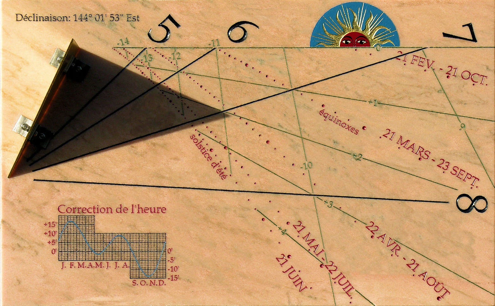
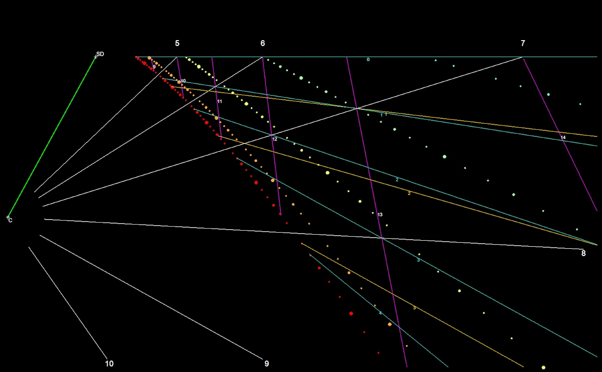
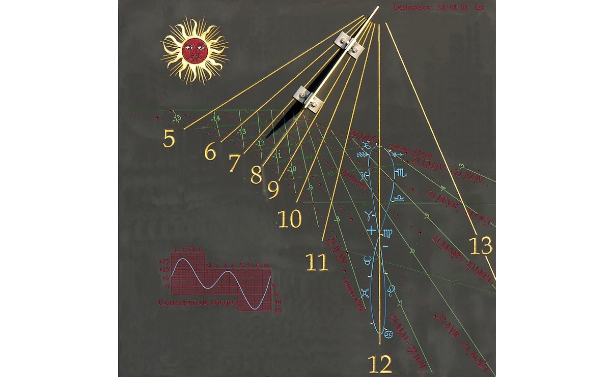
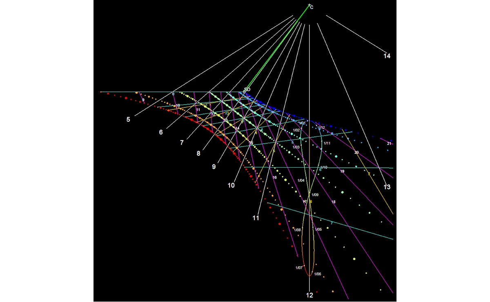
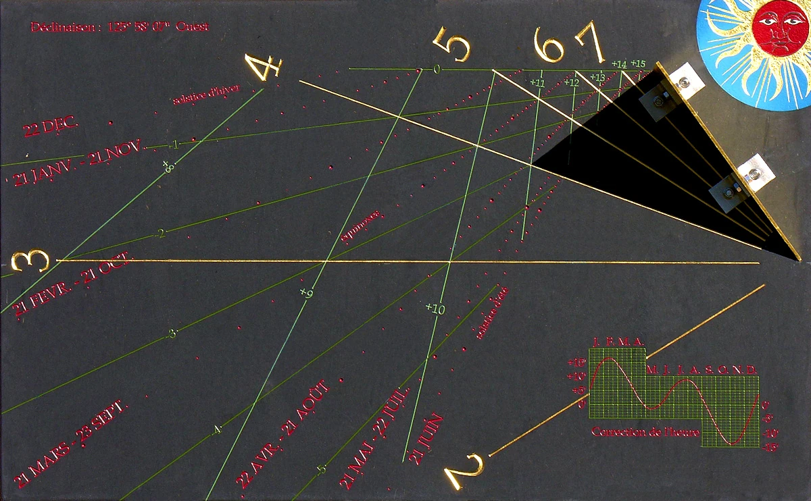
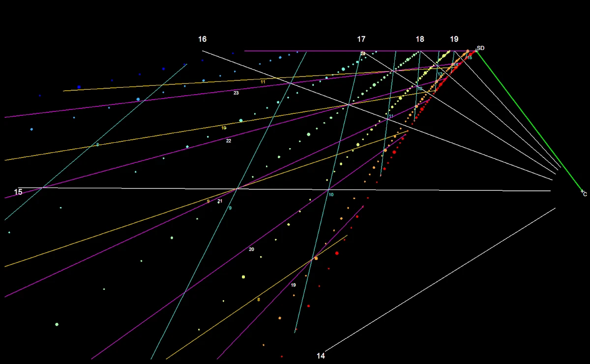
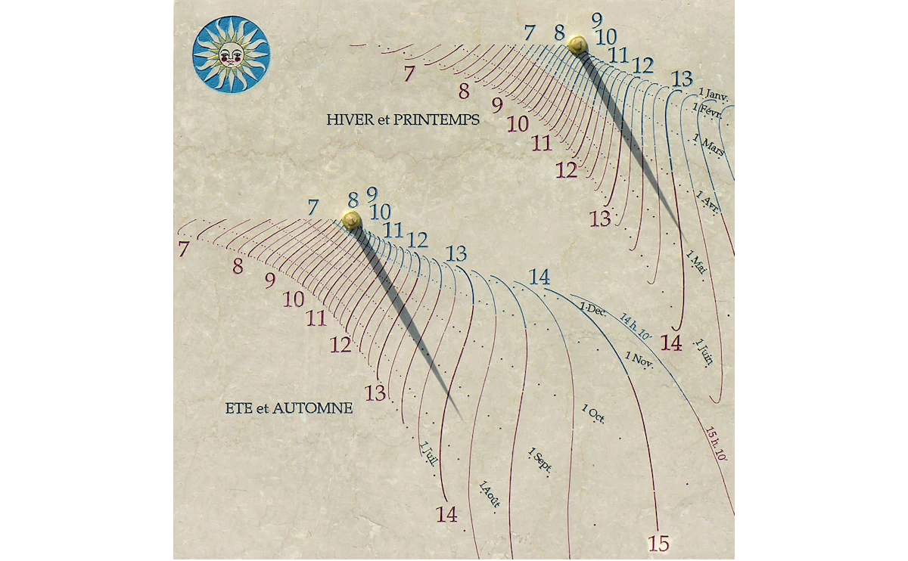
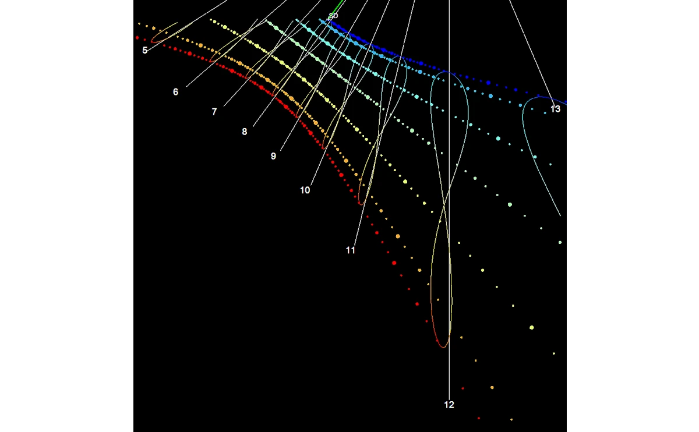
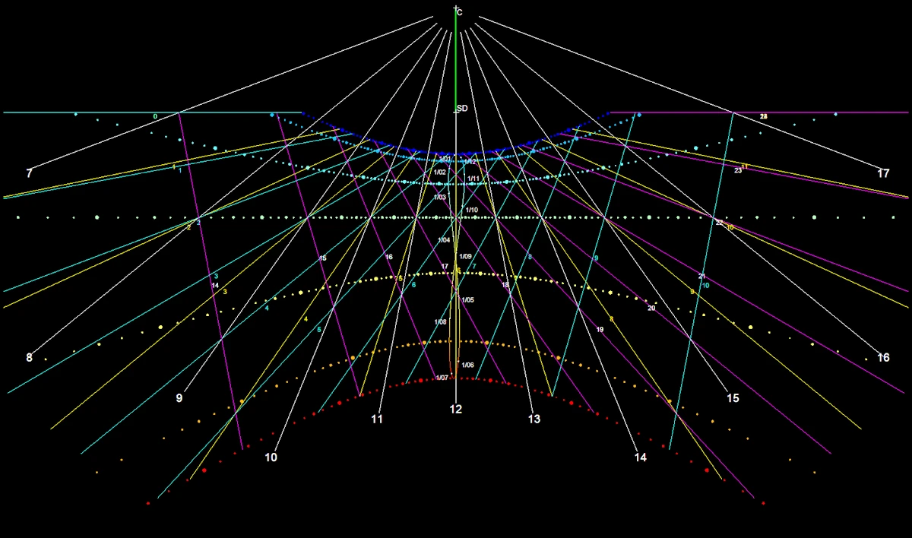
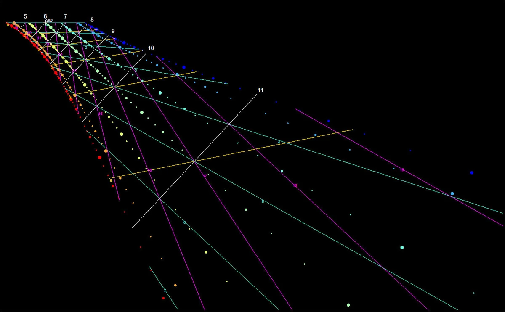
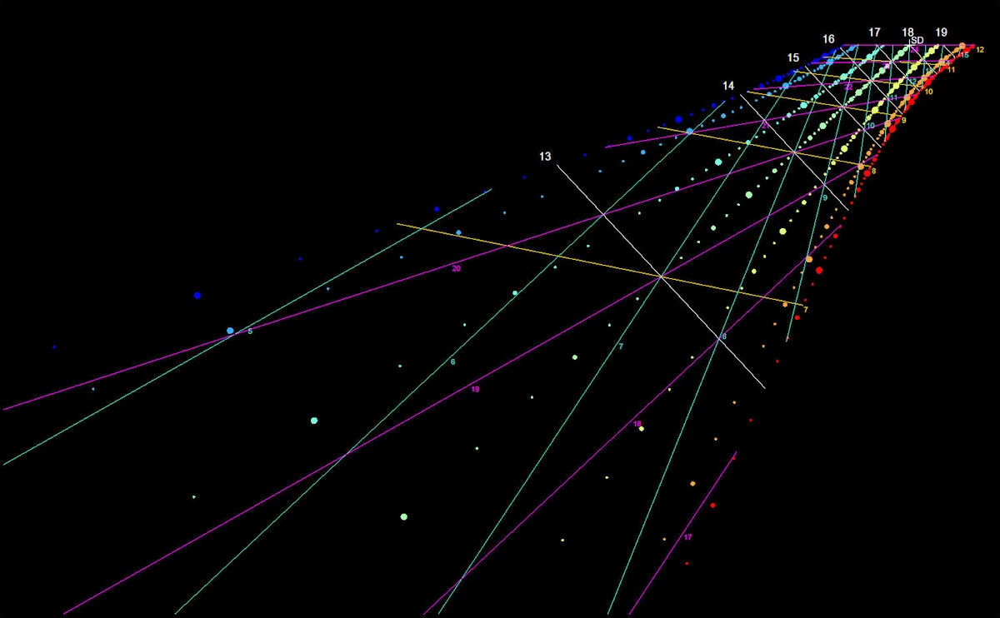
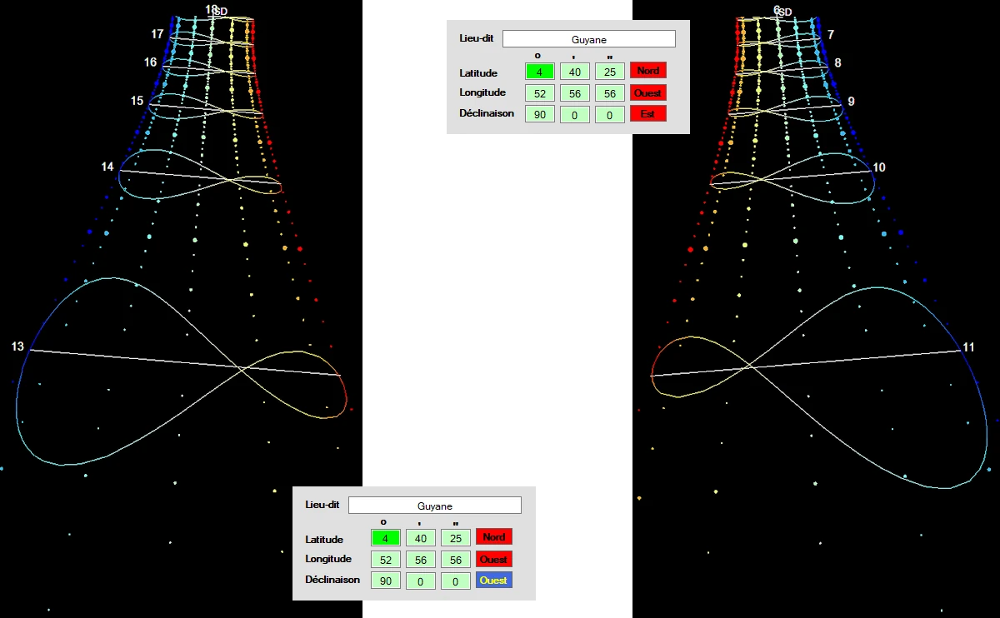
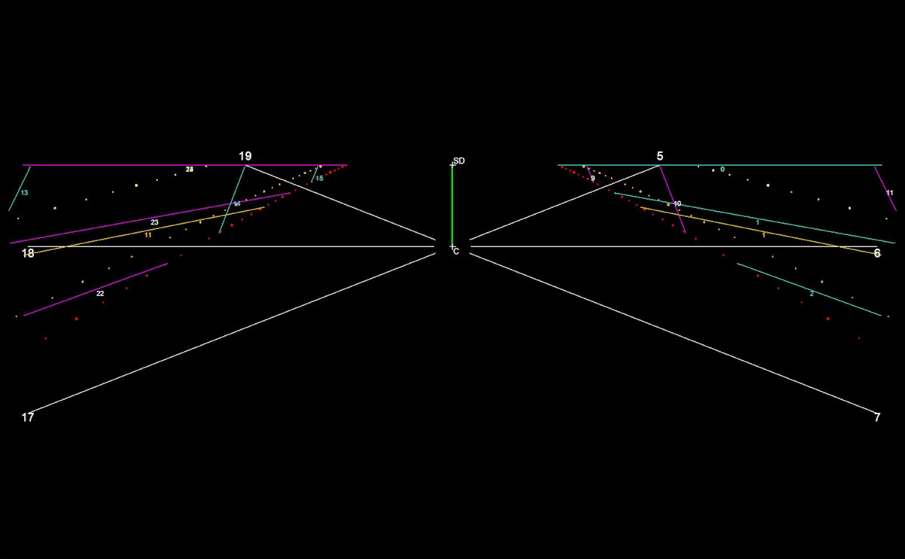
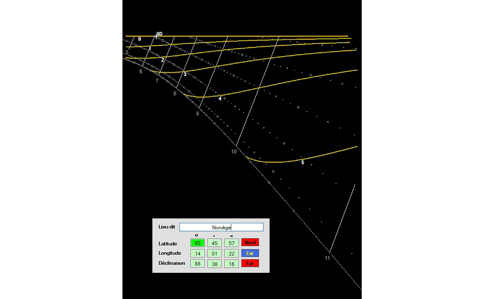
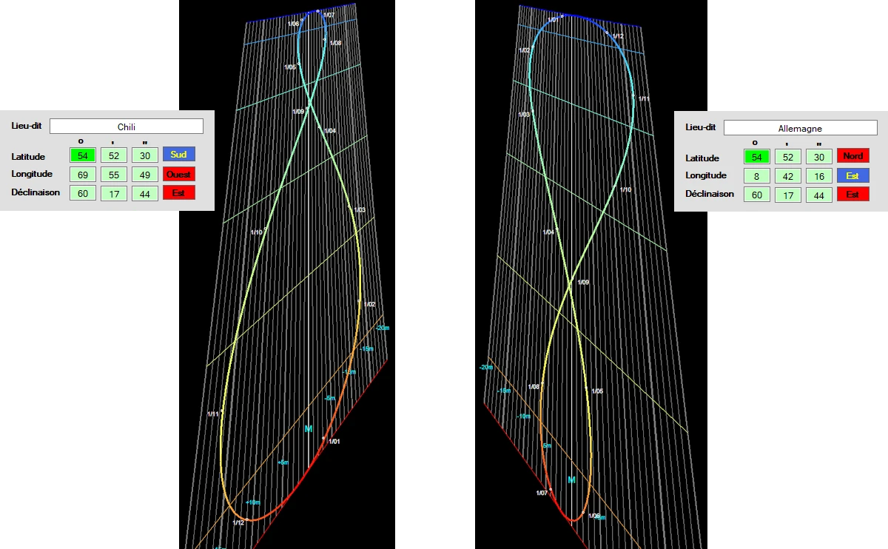
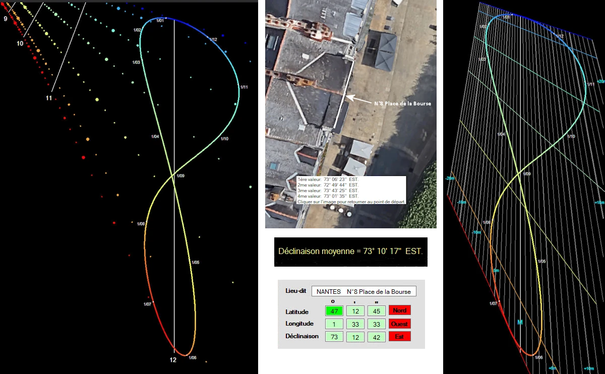